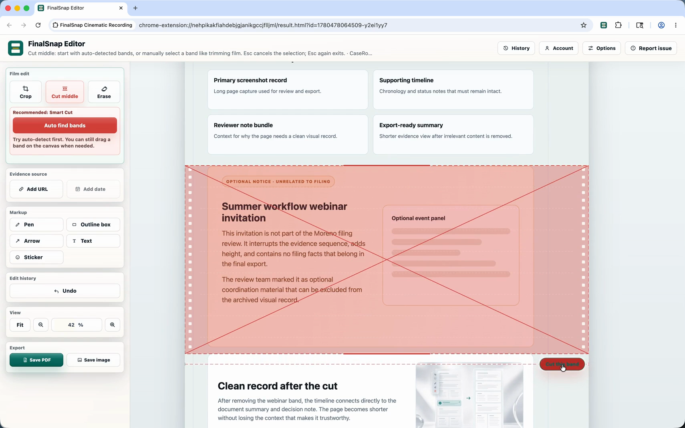
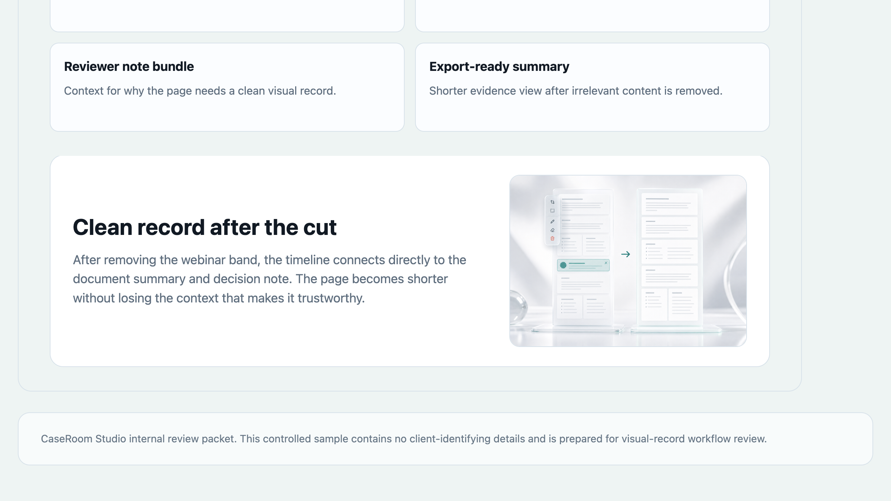

Before FinalSnap
- Capture the page.
- Open a separate editor.
- Cut a section, move the page upward, repair the seam.
- Repeat until the record is clean enough to send.
Clean long screenshots without rebuilding them by hand.
Capture the full page, remove the parts that do not belong, close the gap, erase the last distractions, and export a record people can actually review.
If Chrome Web Store is unavailable in your region, use the install page or email finalsnapapp@gmail.com.
The part screenshots still make you do
Long screenshots usually leave you with a second job: trimming empty sections, moving content back together, hiding noise, and exporting again. FinalSnap puts that cleanup inside the capture workflow.
Try it on a real page shape
The sample includes what makes long screenshots annoying: useful dates that should stay, one irrelevant middle section, and a small mark that should disappear before export.

The cleanup move
A long screenshot should get shorter without becoming broken. FinalSnap removes the waste, pulls the remaining page together, and keeps the record readable.
See the moves
Each clip shows one part of the cleanup. Use full screen when you want to inspect the cursor movement and the before/after payoff.
Time back
Enter the cleanup work you do in a normal month. The estimate turns that manual editing time into hours and dollar value you can get back.
Based on the time difference between manual cleanup and FinalSnap cleanup.
This is a planning estimate. Your workflow sets the real number.
Shorter records
Keep the parts that prove the point. Remove the sections that make the file longer, noisier, and harder for someone else to read.

Built for evidence
Automation should save the boring work and still leave you in charge of the record. FinalSnap keeps the important controls visible.
Export or share only when you choose to.
Use automation for speed, then adjust by eye when the record needs judgment.
Cut, reconnect, erase, export. No design-suite detour.